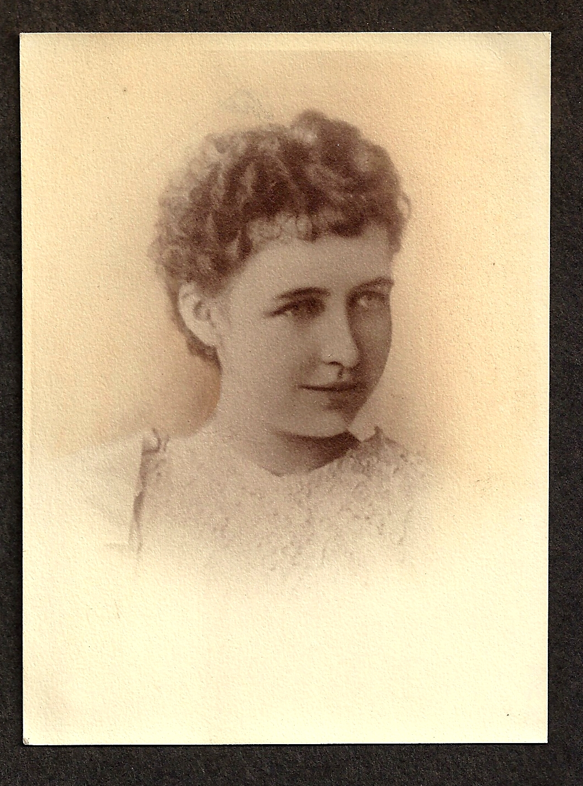

Vida Jane Young was born in 1877 in Gun Hill, Lenox Township, Susquehanna County, Pennsylvania,. Her parents were George Clark Young and Emma Bartholomew. She was the second of four children: Elizabeth (“Libbie“), born 1876, herself, Ernest born 1880 and Grace, born 1883.
{kind=link}
{kind=link}
Vida and her sister Grace were reared by their grandmother. Vida was the valedictorian of her high school class, graduating at the age of 16. After schooling she hocked a gold brooch (she later bought it back) and she and her younger sister rode the Katy Railroad from Pennsylvania to Texas. It was said that $1.00 was budgeted for food while the traveled. An uncle named Young was a RR engineer for the Katy line. The exact date of this trip is unknown. They arrived in Houston and Vida went to work as a seamstress for Levy’s Bros. in downtown Houston. Shortly after this she passed the state teachers’ exam and became a certified teacher, teaching in the Smithville, Texas, school district. While living in Smithville she fell in love with a young state senator from that area. Because of opposition from his family he married a girl with more money and social position. Broken hearted, Vida asked for a transfer and taught at Millard School, Beaumont, Texas. Shortly after arriving in Beaumont she met Charles Theophilis Heisig (“CT”), who with his brother Paul had moved to Beaumont in 1895. They were married on January 1, 1900 at Vida’s Aunt’s house in Houston. He was age 36 and she was 22.
Vida and CT had 6 children (listed below). Sadly, while she was visiting her sister in Pennsylvania in 1903, the second child, Cecil Emerson, died at one year of age, according to the family from a fatal overdose of medicine administered by a doctor. The boy was suffering from the croup. Vida’s grief was unbearable until a relative told her about Christian Science, which was said to have healed her grief. She became a lifelong Christian Scientist and raised her 5 daughters in the religion. As the five other children were all girls, the Heisig name was not carried down this line.
CT was successful in banking, real estate, and other adventures and in 1904 he built his family a fine large home at 2084 Hazel Street in Beaumont. As of 1968 it was still standing and owned by the family, but later fell into disrepair and was torn down and replaced by apartments.
{kind=link}
In 1928, the oldest daughter Carla died from childbirth fever one week after giving birth to her second child. Carla’s husband left the two children, Carla Ruth and Wylie, Jr. with Vida Jane, the grandmother. She raised these two grandchildren as her own and saw them through college and married. She also helped raise her daughter Helen’s son John after Helen was left a single mother in the 1940s.
The Depression hit CT’s businesses hard and because of the severity of the losses and acute despondency, he committed suicide on June 13, 1932. He was 68. Thus Vida had lost two children and her husband by 55.
Vida Jane was about 5’5” or 5’6”. She had blonde hair, blue eyes and fair skin and was quite lovely both as a young woman and in her older years. She had strong character and was very industrious but was also loving and generous. Her family called her “Dear.” She had a strong interest in mathematics and mechanical machinery and was a good “fixer” and “handyman” around the house. She had a garden, chickens and at one time a milk cow. Her fried chicken and lemon meringue pies are especially remembered. Her green thumb was evidenced in her flower garden which always bloomed.
Vida was a member of many of Beaumont’s civic and social clubs, being at one time president of the Beaumont Women’s Club. She was especially proud of her membership in the Daughters of the American Revolution and the Colonial Dames. She was a direct descendant of Joshua Baker, who was born in 1752 and was a scout in the American Revolution, wounded and a prisoner at the Battle of Groton Heights in 1781. He also was the first man who stood sentry at Fort Griswold. He died in 1836 at the age of 84. Family lore said Vida was also a descendant of General Horatio Gates, one of Washington’s generals and of Governor Winthrop, colonial governor of North Carolina, but this has not been confirmed.
After a serious fall and hip fracture and several hip operations she passed away on September 12, 1954, at the age of 77, and was buried in Magnolia Cemetery.
Children of Charles and Vida:
Cecil Emerson Heisig (July 4, 1902-July 24, 1903)
Carla Theo Heisig Harris (1900-1928)
Helen Ruth Heisig Vance (1904-1987)
Dorothy Grace Heisig Price (1912-1973)
Marjorie Jane Heisig Browne (1917-2005)
Marguerite Joyce Heisig Schlosser (1917-2000)
- Vida Young Heisig obituary, September 12, 1954
- Vida J. Young, circa 1900, age 20, the year she married CT
- Vida Jane Young Heisig, circa 1915
- circa 1920
- circa 1930, age 52
- out on the town around age 75, circa 1942
{kind=link}
Vida Young Heisig obituary, September 12, 1954
Sources:
Link about Joshua Baker from The Battle of Groton Heights: A Collection of Narratives, Official Reports, Records, Etc., of the Storming of Fort Griswold, the Massacre of Its Garrison, and the Burning of New London by British Troops Under the Command of Brig.-Gen. Benedict Arnold, on the Sixth of September, 1781, by William Wallace Harris, C. Allyn 1882 (Google eBook), p. 228.